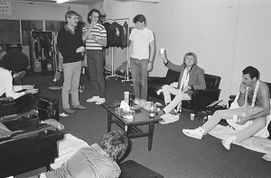
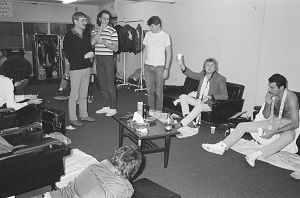

¿Qué fue del villano de 'Bohemian Rhapsody', el hombre que traicionó a Freddie Mercury?
El actor que encarnó a Freddie Mercury en la cinta admite que el despido de Bryan Singer "era algo que tenía que hacerse"...
¡Bienvenidos!
| Gira 2019 | Fecha |
|---|
El actor que encarnó a Freddie Mercury en la cinta admite que el despido de Bryan Singer "era algo que tenía que hacerse"...
El actor que encarnó a Freddie Mercury en la cinta admite que el despido de Bryan Singer "era algo que tenía que hacerse"...
"Me contaron que Freddy llevó a un bar a la princesa Diana y la disfrazó como un hombre", relata el actor...
Según el exmánager de Queen, John Reid, el célebre cantante podría haber utilizado parte de su fortuna para arreglarse una parte de su cara muy reconocible. . .